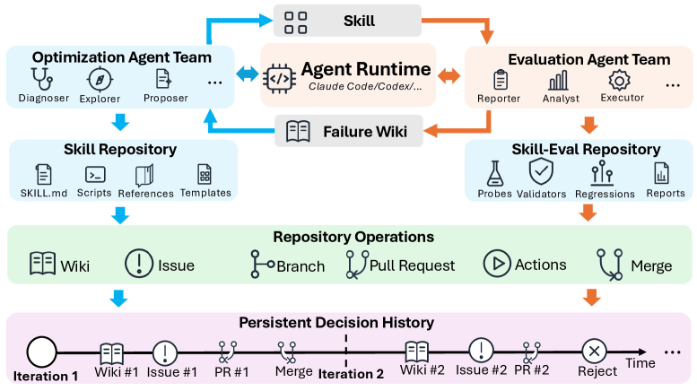
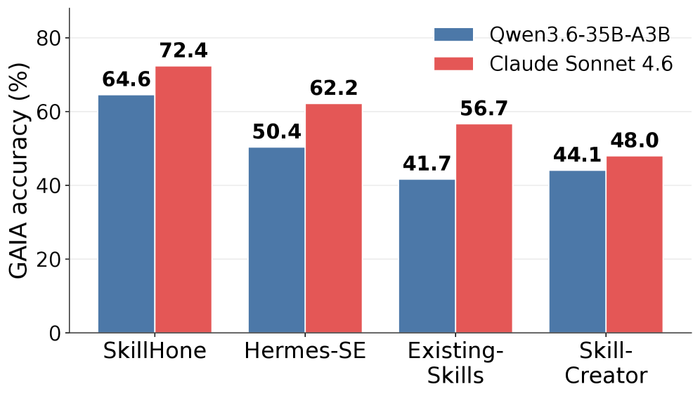

SkillHone: Skill Evolution Needs the Decision History, Not Just the Artifact
TL;DR
- "SkillHone: A Harness for Continual Agent Skill Evolution Through Persistent Decision History" (arXiv 2606.08671; Zhiwei Li, Yong Hu — Tencent/WeChat, per the announcement thread; code on GitHub) argues that skill-evolution systems that keep only the final skill artifact throw away what later agents actually need: the record of why the skill changed, what was tried, and what was rejected.
- The harness pairs a skill repository with a skill-evaluation repository under strict role separation — optimization subagents see only redacted evaluation reports (never oracle targets, validators, or traces), evaluation subagents can never write to the skill — and logs every step as a decision record \(h_t=(q_t, r_t, e_t, o_t)\): diagnosis, candidate revision, redacted evidence, outcome.
- On deep-research benchmarks with a Qwen3.6-35B-A3B execution backbone and no pre-integrated search stack, SkillHone reaches 64.6% on GAIA and 66.4% on WebWalkerQA-EN — 15.8/3.2 points above a commercially backed deep-research agent — and the skill bundle transfers zero-shot to Claude Sonnet 4.6 (72.4% GAIA). Ablating the decision history costs 13.4/10.9 points, roughly twice the cost of ablating role separation.
Why this matters
The skill-evolution literature this tracker follows — Qwen's skill self-play, SkillRise's cross-task curricula, HiSME's hierarchical libraries, MSCE's memory-to-skills conversion — has mostly answered "how do we produce a better SKILL.md?" and treated the produced artifact as the entire output. SkillHone's diagnosis is that this is the same mistake as doing software engineering with snapshots instead of version control plus issue tracker: a later agent handed only the latest artifact cannot tell whether a failure is new, whether a candidate fix was already tried and rejected, or why a past revision looked the way it did. So it re-derives diagnoses, repeats dead-end edits, and — the paper's Figure 1 scenario — undoes a prior optimization in a way that makes future improvement harder.
Two things make this paper worth reading rather than just nodding at. First, the redaction firewall: the optimization side improves the skill using evaluation evidence but never sees oracle answers, validators, or raw traces, which blocks the failure mode where "skill improvement" degenerates into memorizing the practice set — the artifact-level analogue of train/test hygiene, and a concern the tracker's evolving-benchmarks entry raised from the evaluation side. Second, the ablation actually separates the two mechanisms and finds the history is worth about twice the firewall — a clean empirical claim that persistent process memory, not just better per-step reflection, is where continual improvement comes from. For a user whose daily tooling is literally Claude-style skills and harnesses, this is the most directly actionable of today's papers.
The core idea
A skill is a loadable artifact — SKILL.md plus scripts, references, templates, output conventions — for a class of tasks. Model backend and tools stay fixed; the object of improvement is the artifact. SkillHone formalizes the harness as
an Optimization Agent Team, an Evaluation Agent Team, and a runtime dispatcher \(\mathcal{D}\) that routes messages but makes no decisions. The optimization side owns the skill repository; the evaluation side owns the skill-evaluation repository (practice probes, oracle targets, validators, regression sets, traces, reports). Permissions are asymmetric by construction: evaluation dispatches may run the current skill on probes and produce redacted reports but cannot write to the skill; optimization dispatches may read prior decisions, diagnose, propose typed revisions, and patch the skill but cannot access unredacted targets, validators, or traces.
Every development step is recorded as a decision record
where \(q_t\) is the diagnosis, \(r_t\) the candidate revision, \(e_t\) the redacted evaluation evidence, and \(o_t\) the outcome — accept, reject, request changes, or defer. Accepted revisions produce the skill sequence \(S_0,\ldots,S_T\), and the accumulated history \(\mathcal{H}_t=\{h_1,\ldots,h_t\}\) is what persists across sessions. The paper's key distinction: a diff shows how files changed; a decision record links the change to the problem it targeted, the evidence used to judge it, and the verdict — which is what lets a later subagent decide whether a new failure is genuinely new, whether a similar fix already failed, and whether a previously rejected patch deserves revisiting under new evidence.
How it works

Figure 2 from the paper: role-separated dispatches around two linked repositories. Optimization never sees oracle targets; evaluation never writes skills; the dispatcher is a message router, not a decision authority.
state: skill repo (S_t), eval repo (probes, oracles, validators, traces),
decision history H_t
loop over development steps:
# evaluation side (can read oracles/traces; cannot write skill)
run current skill S_t on practice probes
analyze failures against validators and traces
emit redacted report E~_t # no oracle answers, no raw traces
# optimization side (can write skill; sees only redacted evidence)
retrieve relevant prior records from H_<t
q_t = diagnosis (is this failure new? was a similar fix rejected?)
r_t = typed revision (scoped patch to SKILL.md / scripts / references)
peer dispatches review the candidate
# outcome, recorded either way
o_t in {accept, reject, request-changes, defer}
if accept: S_{t+1} = apply(r_t, S_t) # scoped change, revertible
append h_t = (q_t, r_t, E~_t, o_t) to H_t
Because the history survives sessions, "continual" is literal: a fresh agent team weeks later inherits not a snapshot but an auditable evolution process — including rejected alternatives, which the paper's Appendix C trajectory comparison shows is what lets SkillHone make scoped reverts while a reflective baseline (Hermes-SE) accepts or rejects whole candidates on a scalar signal.
Results

Figure 3 from the paper: skill bundles developed once, then run directly on Claude Sonnet 4.6 without further optimization — SkillHone's bundle transfers best.
Setup: deep research as the testbed (GAIA text-only validation split; WebWalkerQA-EN), a deliberately hostile "raw open-web" setting — no managed retrieval service; free/community search interfaces that rate-limit, fail, and change format. Claude Opus 4.6 is the development-time controller; Qwen3.6-35B-A3B executes and evaluates; 20 items adapted from WebShaper (disjoint from both benchmarks) drive skill evolution for all methods; all raw open-web systems start from the same community-skill pool (ClawHub, SkillHub) and emit the same portable skill-bundle interface.
- Main results: SkillHone reaches 64.6% GAIA / 66.4% WebWalkerQA-EN, +15.8/+3.2 over the curated-search deep-research agent despite having no pre-integrated search tools; +20.5/+28.3 over Skill-Creator and +14.2/+13.4 over Hermes-SE in the matched raw open-web setting.
- Organization, not components: the gap to Existing-Skills (same pool, no optimization) shows the value is in turning skills into a procedure — when to search broadly, follow a source, verify, recover — not in access to the skills themselves.
- Cross-backbone transfer: the finished bundle run as-is on Claude Sonnet 4.6 scores 72.4% on GAIA, +10.2/+15.7/+24.4 over Hermes-SE/Existing-Skills/Skill-Creator bundles — the artifact encodes genuinely portable procedure.
- Ablation: removing decision history (role separation kept, scalar-signal reflection) costs −13.4/−10.9; removing role separation (history kept, one subagent sees everything) costs −6.4/−5.3. History is the bigger mechanism.
- Deployment: on seven recurring internal tool-mediated analysis scenarios, SkillHone improves six of seven seeded skills, average +18.8 points, largest where the seed procedure was underspecified (counting, aggregation, structure parsing, span retrieval).
How it connects
- [MSCE: Memory into Executable Skills] and [HiSME] — both curate skill libraries with governance heuristics; SkillHone's answer to "how do you know a revision is good?" is evaluation-side evidence plus a recorded accept/reject trail, rather than library-level heuristics.
- [SkillRise] — the weight-space counterpoint: RL prices skill curation against future task returns; SkillHone prices revisions with practice probes and keeps everything in artifacts + history, no weight updates. The two are answering the same credit question at different layers.
- [Harness-R1] (also added today) — frozen model, improve the surroundings, but via a trained engineer with no cross-batch memory; SkillHone is training-free with persistent memory. An engineer that reads SkillHone-style decision history is the obvious synthesis.
- [SKT: Verified Skill Trajectories] (today) — finds unverified synthetic skill-use data actively hurts; rhymes with SkillHone's insistence that evidence and outcome be attached to every change.
- [Evolving Benchmarks] and [Memoria: Git-Versioned Agent Memory] — the hygiene and version-control ancestors of the two mechanisms here; SkillHone effectively ships "git + issue tracker + blind review" for skills.
- [Persistent Workspaces for Long-Lived Claude Code Agent Teams] — the workspace-level version of the same bet: the process record is the asset.
Critical take
The core idea is convincing and the ablation is the right experiment, but the evidential base is narrow in ways worth naming. Development data is 20 WebShaper items — the whole evolution loop runs on a tiny probe set, and although redaction blocks verbatim memorization, it does not block distributional overfitting to what those 20 probes reward; the transfer result to Sonnet 4.6 is the strongest counter-evidence, transferring across backbones but not across probe distributions. The headline +15.8 on GAIA compares a raw-open-web system against a curated-search commercial agent — impressive precisely because the setting is harsher, but the comparison bundles together skill quality, scaffold differences, and whatever the unnamed commercial agent's constraints are; the matched-pool comparisons (+14.2 over Hermes-SE) are the ones to quote. The deployment study is internal and unverifiable by construction. And there's a scaling question the paper defers: decision history grows without bound, and "retrieve relevant prior records" is doing a lot of unexamined work — at hundreds of revisions, history retrieval becomes its own memory problem, exactly the one MemHarness and PageIndex-style systems exist to solve. Two-author systems papers with strong numbers on small evals deserve replication before the numbers are treated as load-bearing; the design — separate evaluation evidence from optimization access, and persist the why alongside the what — stands on its own and is immediately copyable into any skill-maintaining harness, including this tracker's own.
If you remember three things
- Persist the process, not just the artifact: a decision record \((q_t, r_t, e_t, o_t)\) per revision is what lets later agents distinguish new failures from re-discovered ones — ablating history costs ~2× more than ablating the evaluation firewall.
- Redaction is train/test hygiene for skills: optimization sees evidence, never oracles or traces, so practice feedback can't become a memorization target.
- The bundle is portable: skills evolved under a Qwen3.6-35B backbone transfer zero-shot to Claude Sonnet 4.6 at 72.4% GAIA — procedure, once made explicit, outlives the model that wrote it.